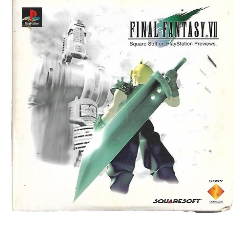
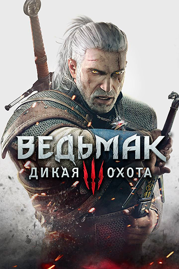
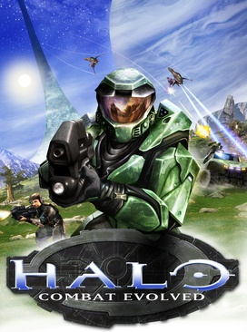

Топ-10 саундтреков всех времён
По версии нашего проекта (и миллионов игроков)
-

Final Fantasy VII
Композитор: Нобуо Уэмацу
Знаменитая «One-Winged Angel» и меланхоличная «Aerith's Theme».
-

The Elder Scrolls V: Skyrim
Композитор: Джереми Соул
Эпическая «Dragonborn» с хором на драконьем языке.
-

The Legend of Zelda: Ocarina of Time
Композитор: Кодзи Кондо
Мелодии, ставшие культовыми: «Zelda's Lullaby», «Gerudo Valley».
-

The Witcher 3: Wild Hunt
Композитор: Марчин Пшибылович, Миколай Строински
«Silver for Monsters», «The Fields of Ard Skellig».
-

Halo: Combat Evolved
Композитор: Мартин О'Доннелл, Майкл Сальватори
Грегорианский хорал и эпичный главный мотив.
-
Super Mario Bros.
Композитор: Кодзи Кондо
Мелодия, вызывающая ностальгию даже у самого далёкого от видеоигр человека
* Список субъективен и составлен в образовательных целях.